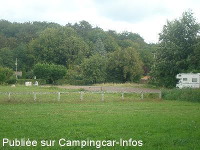

ASN = Aire de services avec stationnement nuit possible de :
SAINT BONNET TRONÇAIS
(N° 652)
Accès/adresse :
Route de Tronçais
03360 SAINT BONNET TRONÇAIS
03360 SAINT BONNET TRONÇAIS
Latitude : (Nord) 46.6602° Décimaux ou 46° 39′ 36′′
Longitude : (Est) 2.69723° Décimaux ou 2° 41′ 50′′
Tarif : 2014
Stationnement gratuit
Services : 5 €
Jetons à la boulangerie
Type de borne : Autre
Services :


restauration
Supérette
Autres informations :
100 emplacements
Parking du stade municipal
à l'entrée du village
Tél Mairie : +33(0)470 061 022

Le 10/10/2013 par Catherine
Le 10/10/2013 par Catherine
Le 10/10/2011 par Catherine
Le 10/10/2011 par Catherine
Le 10/10/2011 par Catherine
Le 10/10/2006 par Jean Touly
de
Béatrice & Philippe
le 13/08/2015 :
Bel endroit, plat, au calme, de l'espace et un sentier pour rejoindre l'étang ouvert à la baignade.
Merci à la commune.
Bel endroit, plat, au calme, de l'espace et un sentier pour rejoindre l'étang ouvert à la baignade.
Merci à la commune.
de
joel et sandrine
le 29/09/2014 :
Grand aire assez plat ,bruyant car près de la route ,le clochet sonne la nuit toutes les heures ainsi que les demi heures difficile de dormir dans ces conditions, le coin poubelles est peu propre.
Grand aire assez plat ,bruyant car près de la route ,le clochet sonne la nuit toutes les heures ainsi que les demi heures difficile de dormir dans ces conditions, le coin poubelles est peu propre.
de
Catherine
le 10/10/2013 :
Bonjour à tous.
Nous y avons passé les nuits du 13 au 15 Septembre 2013.
Aire toujours aussi tranquille, à tout point de vue.
Le côté vers la borne mériterait d'être un peu plus avenant et plus propre.
Bonjour à tous.
Nous y avons passé les nuits du 13 au 15 Septembre 2013.
Aire toujours aussi tranquille, à tout point de vue.
Le côté vers la borne mériterait d'être un peu plus avenant et plus propre.
de
TEUQUOF
le 12/05/2013 :
Aire super-calme. très près du bourg à pied. Seule la cloche de l'église proche peut géner les dormeurs légers la nuit.
Aire de service indisponible le lundi quand la mairie et la boulangerie sont fermées.
Aire super-calme. très près du bourg à pied. Seule la cloche de l'église proche peut géner les dormeurs légers la nuit.
Aire de service indisponible le lundi quand la mairie et la boulangerie sont fermées.
de
Catherine
le 10/10/2011 :
Passage le 7-8-9 Octobre 2011.
Temps maussage et pluvieux, donc terrain pas forcémment très agréable, mais aire toujours aussi calme et agréable pour passer la nuit.
Passage le 7-8-9 Octobre 2011.
Temps maussage et pluvieux, donc terrain pas forcémment très agréable, mais aire toujours aussi calme et agréable pour passer la nuit.
de
Catherine
le 05/10/2011 :
Passage le 27-28 août 2011.
Que du bonheur ! Super agréable, calme, relativement plat, commerces à 5 mn en passant par derrière, plan d'eau très proche également par petit chemin derrière l'aire.
Passage le 27-28 août 2011.
Que du bonheur ! Super agréable, calme, relativement plat, commerces à 5 mn en passant par derrière, plan d'eau très proche également par petit chemin derrière l'aire.
de
youpy54
le 10/09/2010 :
Que du bonheur pour les CC. Quel accueil ! Une aire de services et en plus, un grand parking mis à notre disposition près des commerces, de l'étang et de la forêt. Un tout grand merci à la municipalité.
Que du bonheur pour les CC. Quel accueil ! Une aire de services et en plus, un grand parking mis à notre disposition près des commerces, de l'étang et de la forêt. Un tout grand merci à la municipalité.
de
Soazig
le 23/09/2009 :
Je me suis servie de l'aire uniquement pour vidanger! Pour passer 2 nuits, j'ai utilisé le grand parking situé entre le bourg et l'étang réservé aux camping-cars, avec poubelles tout près (avec tri sélectif). On est à 2 mn des commerçants (petite surface, boucher, boulanger, pharmacie) et aussi à 2 mn de l'étang et de la forêt! et le bonheur d'être sur l'herbe!
Je me suis servie de l'aire uniquement pour vidanger! Pour passer 2 nuits, j'ai utilisé le grand parking situé entre le bourg et l'étang réservé aux camping-cars, avec poubelles tout près (avec tri sélectif). On est à 2 mn des commerçants (petite surface, boucher, boulanger, pharmacie) et aussi à 2 mn de l'étang et de la forêt! et le bonheur d'être sur l'herbe!
de
SEIGNE
le 02/06/2009 :
Aire très calme. Dommage que si on arrive un peu tard, après 19h, on ne peut plus trouver de jeton. Bien dormi en bordure de la forêt de Tronçais.
Aire très calme. Dommage que si on arrive un peu tard, après 19h, on ne peut plus trouver de jeton. Bien dormi en bordure de la forêt de Tronçais.
de
Titi & Delph
le 28/08/2006 :
Aire super sympa, nuit très calme. A recommander sans hésitation. Pour les services, je confirme le système des jetons avec la boulangerie
Aire super sympa, nuit très calme. A recommander sans hésitation. Pour les services, je confirme le système des jetons avec la boulangerie